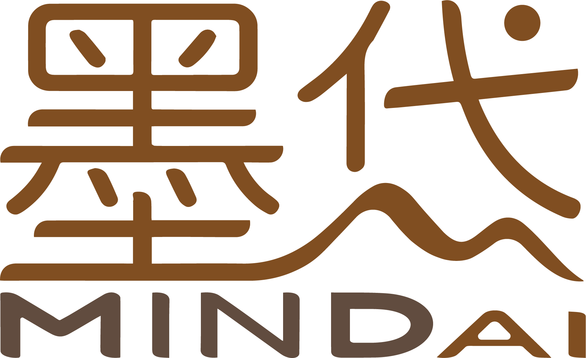

小微企业诊断工具
基于系统动力学的企业问题快速诊断
完成30道题，大约3分钟
🏭
生产型企业
制造 / 施工 / 工程 / 软件 / 加工
💼
服务型企业
零售 / 咨询 / 财税 / 美业 / 餐饮
本工具专为生产型和服务型小微企业设计。房地产 · 政府项目 · 人脉驱动型业务 暂不在服务范围内。
您的企业目前有多少人？
选择最接近的档位，帮助我们更精准地诊断
微型企业
20人以下
小型一档
20 - 50人
小型二档
50 - 100人
小型三档
100 - 300人
墨岱科技
第 1 / 30 题
下一题 →
×
查看完整诊断报告
填写以下信息，即可免费查看完整报告和针对性建议
姓名 *
手机号 *
企业名称（选填）
查看完整报告
您的信息仅用于本次诊断服务，不会泄露给第三方